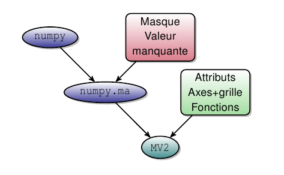

3.8.4. Leçon d’introduction à UV-CDAT¶
3.8.4.1. Introduction¶
Site web : http://uv-cdat.llnl.gov/
CDAT est destiné à la communauté océano/météo/climat.
- CDAT étend les variables masquées de numpy en ajoutant attributs, axes (et grille) et autres méthodes : parallèle avec le netcdf (cf. note ci-dessous).
- CDAT offre des outils pour lire, écrire et traiter ces variables : ces outils n’ont pas besoin de recevoir les coordonnées en argument.

Le passage de numpy à MV2 (CDAT).
Note
Parallèle avec le netcdf.
Côté python :
>>> var.info()
*** Description of Slab temp ***
id: temp
shape: (3,)
filename:
missing_value: 1e+20
comments:
grid_name: N/A
grid_type: N/A
time_statistic:
long_name: Temperature
units: degC
No grid present.
** Dimension 1 **
id: lon
Designated a longitude axis.
units: degree_north
Length: 3
First: 0
Last: 2
Other axis attributes:
long_name: Longitude
axis: X
modulo: 360.0
topology: circular
Python id: 0x39efc10
*** End of description for temp ***
Côté fichier netcdf
netcdf toto {
dimensions:
lon = 3 ;
bound = 2 ;
variables:
int lon(lon) ;
lon:bounds = "bounds_lon" ;
lon:units = "degree_north" ;
lon:long_name = "Longitude" ;
lon:axis = "X" ;
lon:modulo = 360. ;
lon:topology = "circular" ;
double bounds_lon(lon, bound) ;
double temp(lon) ;
temp:units = "degC" ;
temp:long_name = "Temperature" ;
temp:name = "variable_3" ;
temp:missing_value = 1.e+20 ;
// global attributes:
:Conventions = "CF-1.0" ;
}
3.8.4.2. Les bases¶
Fichier courses_cdat_bases.py
#!/usr/bin/env python
# -*- coding: utf8 -*-
"""UV-CDAT - First commands (MV2 variables, grid, links with numpy arrays)"""
# Imports
import matplotlib
matplotlib.use('qt4agg')
import cdms2, MV2, sys
import numpy as N
from vacumm.misc.axes import create_lon,create_lat, create_time, create_dep, create_depth, islon, isdep, istime
from vacumm.misc.plot import map2 as map, hov2, section2
from vacumm.config import data_sample
# -----------------------------------------------------------------------------------------------------------
# ---- From a NetCDF file ...
print 10*'-'+' ... From a NetCDF File ... '+10*'-'
f = cdms2.open(data_sample('mars3d.xy.nc'))
ncarr=f('temp', lat=slice(5,-1), lon=(-6.2, -4))
f.close()
print 'Array dimension :', ncarr.shape
print 'Array type - ncarr - :',type(ncarr)
# print 'Longitude :',ncarr.getLongitude()
# print 'Latitude :',ncarr.getLatitude()
print '2D Grid: ',ncarr.getGrid()
# ---- Copy or not copy !!!!
print 'An example: ',ncarr[50,50]
# ==> Practice: test and understant the differences WITH and WITHOUT copy.
newnccarr = ncarr.clone() # WITH COPY
newnccarr = ncarr # WITHOUT COPY
print '+ nccarr: ',ncarr[50,50]
print '+ newnccarr: ',newnccarr[50,50]
newnccarr[50,50] = 25.
print '+ newnccarr modified: ',newnccarr[50,50]
print '+ nccarr after modification of newnccarr: ',ncarr[50,50]
# Back to numpy array ...
nparr=ncarr.getValue()
print 'Array type - nparr - :',type(nparr)
sys.exit() # End of the run
# -----------------------------------------------------------------------------------------------------------
# -----------------------------------------------------------------------------------------------------------
# ---- From a Numpy array ...
print 10*'-'+' ... From a numpy array ... '+10*'-'
# ---- A 2-D numpy array ...
print 10*'-'+' Numpy array '+10*'-'
arr = N.random.rand(10,15)
print 'Array dimension :', arr.shape
print 'Array type - arr - :',type(arr)
# print arr
# ---- From numpy array to MV2 (Masked array) ...
print 10*'-'+' MV2 array '+10*'-'
marr = MV2.array(arr)
print 'Array type - marr - :',type(marr)
# print marr
# Mask value lower than 0.5 ...
# More details on masked array operations: http://docs.scipy.org/doc/numpy/reference/routines.ma.html
marr=MV2.masked_where((marr < 0.5),marr)
# print marr.mask
# print marr
print 'Array dimension :', marr.shape
print 'Fill value: ',marr.fill_value
# Back to numpy array ...
nparr=marr.getValue()
# print nparr
# ---- A Cdms2 object = MV2 + Axes + Attributes ...
print 10*'-'+' CDMS2 '+10*'-'
# cdms2.createVariable()
# Geographic axis creation
# - longitude: changing 'lon' id to 'longitude'
ax1 = create_lon(N.arange(10)-7.,id='longitude')
# - latitude
ax2 = create_lat(N.arange(15)*.5+44.)
# ==> Practice: Create cdarr with depth/lat axes. - see doc Vacumm -
# # - depth
# ax1 = create_dep(N.linspace(-1000,0,10))
# # - latitude
# ax2 = create_lat(N.arange(15)*.5+44.)
# ==> Practice: Create cdarr with time/lat axes. - see doc Vacumm -
# # - time
# ax1 = create_time(N.arange(10.),
# 'days since 2006-10-01',long_name='Mon axe de temps')
# # - latitude
# ax2 = create_lat(N.arange(15)*.5+44.)
# - cdms2 variable creation
cdarr = cdms2.createVariable(marr,axes=[ax1,ax2],id='test',attributes=dict(long_name='the main test',units='$m^3 s^{-1}$'))
print 'Array type - cdarr - :',type(cdarr)
print 'Variable :',cdarr.id
# print 'Longitude :',cdarr.getLongitude()
# print 'Latitude :',cdarr.getLatitude()
# print cdarr
# - Result snapshot
if islon(cdarr.getAxis(0)):
map(cdarr, contour=False)
if isdep(cdarr.getAxis(0)):
section2(cdarr, contour=False)
if istime(cdarr.getAxis(0)):
hov2(cdarr, contour=False)
3.8.4.3. Les grilles¶
Fichier courses_cdat_grids.py
#!/usr/bin/env python
# -*- coding: utf8 -*-
"""UV-CDAT - Axes and grids (creating, modifying, axes ...)"""
# Imports
import numpy as N, cdms2, MV2
# -----------------------------------------------------------------------------------------------------------
# Longitude axis creation
# - base
lon = cdms2.createAxis([-5.,-4.,-3.],id='lon')
lon.long_name = 'Longitude'
lon.units = 'degree_east'
# - add lon.axis='X' and lon.modulo = '360.'
lon.designateLongitude()
# Latitude
lat = cdms2.createAxis([46.,47.,48.],id='lat')
lat.long_name = 'Latitude'
lat.units = 'degree_north'
lat.designateLatitude() # lat.axis = 'Y'
# Depth
depth = cdms2.createAxis([-200.,-100.,-0.],id='depth')
depth.long_name = 'Depth'
depth.units = 'm'
depth.designateLevel() # depth.axis = 'Z'
# Time
# - creation
time = cdms2.createAxis([0.,1.,2.],id='time')
time.long_name = 'Time'
time.units = 'days since 2006-08-01'
time.designateTime() # time.axis = 'T'
# - check
ctime = time.asComponentTime()
print ctime,ctime[1].day
# -> [2006-8-1 0:0:0.0, 2006-8-2 0:0:0.0, 2006-8-3 0:0:0.0] 2
rtime = time.asRelativeTime()
print rtime,rtime[1].value
# -> [0.00 days since 2006-08-01, 1.00 days since 2006-08-01,
# 2.00 days since 2006-08-01] 1.0
# Now, we create a variable using these axes.
#- straightforward method
temp1 = cdms2.createVariable(N.ones((3,3,3,3)),typecode='f',id='temp',
fill_value=1.e20,axes=[time,depth,lat,lon],copyaxes=0,
attributes=dict(long_name='Temperature',units='degC'))
print cdms2.isVariable(temp1)
# - Remark
print cdms2.createVariable is MV2.array
# -> True (These are the same functions !)
# - other methos
# . initialization
temp2 = MV2.array(N.ones((3,3,3,3))).astype('f')
# . attributes
temp2.id = 'temp'
temp2.long_name = 'Temperature'
temp2.units = 'degC'
temp2.set_fill_value(1.e20) # <=> temp2.setMissing(1.e20)
# . axes
temp2.setAxisList([time,depth,lat,lon])
# . or for example for each axis individually
temp2.setAxis(1,depth)
# Selection as for file
print temp2(time=("2006-08-01", "2006-08-03", "co")).shape
# The grid itself
# - get it
grid = temp2.getGrid()
# - check axes
grid.getLongitude() is temp2.getLongitude() is grid.getAxis(1) is temp2.getAxis(3)
# - create it!
grid2 = cdms2.createGenericGrid(lat,lon)
# - set it
temp2.setGrid(grid2)
print cdms2.isGrid(grid2)
3.8.4.4. Les utilitaires¶
Fichier courses_cdat_tools.py
#!/usr/bin/env python
# -*- coding: utf8 -*-
"""
Utilitaires intégrés à UVCDAT
Modules: :mod:`cdtime`, :mod:`cdutil`, :mod:`genutil`
"""
# Le module cdtime: la gestion du temps
# - temps absolu
import cdtime
ctime = cdtime.comptime(2000, 1, 1, 6, 23) # mettre moins d'arguments
print ctime.hour # verifier les autres composantes
print cdtime.comptime(2000) > cdtime.comptime(1999)
print cdtime.comptime(2000).cmp(cdtime.comptime(1999))
print ctime.add(1, cdtime.Hour).hour # essayez 70s
# - temps relatif
rtime = cdtime.reltime(23, 'minutes since 2000-1-1 6')
print rtime.value, rtime.units
print rtime.torel('hours since 2000').value
# - conversions
print rtime.tocomp()
print ctime.torel('months since 2000') # essayez les "weeks'
print cdtime.s2c('2000-10').month # testez cdtime.s2r, cdtime.r2r...
# Le module cdutil : utilitaires orientes climat
# - contenu
import cdutil
print dir(cdutil)
# - chargement des données (vent Pacifique central sur plusieurs années)
from vcmq import *
f = cdms2.open(data_sample('uv_pacific.nc'))
u = f('uwnd')
f.close()
# - construire une climatologie mensuelle et des anomalies
cdutil.setTimeBoundsMonthly(u) # importance des bounds (autres ?)
uclim = cdutil.ANNUALCYCLE.climatology(u) # climato
uanom = cdutil.ANNUALCYCLE.departures(u, ref=uclim) # anomalies
print uclim.std(), uanom.std()
djf = cdutil.times.Seasons('DJF') # creation d'une saison
udjf = djf(u) # extraction
dfj = cdutil.DJF # des saisons existent déjà
# - averager
ut = cdutil.averager(u, axis='yx', weights=cdutil.area_weights(u)) # moyenne spatiale
help(cdutil.averager)
# -> essayez la moyenne temporelle
# - regions et selecteurs
equator = cdutil.region.domain(lat=(-2, 2))
select = cdms2.selectors.Selector(lon=slice(0, 3), time=('1950', cdtime.comptime(1960)))
print u(equator)(select).shape
# -> appliquez à la lecture du fichier
# Le module genutil : utilitaires generiques
# - contenu
import genutil
print dir(genutil)
# - statistics standards
print dir(genutil.statistics)
ustd = genutil.statistics.std(u, axis=0) # testez les options
ustd.info()
print N.ma.allclose(ustd, u.std(axis=0))
# - salstat
print dir(genutil.salstat)
print genutil.salstat.kurtosis(u, axis='t') # essayez d'autres fonctions
# - divers
_, uu = genutil.grower(u, u[0]) # testez d'autres slices
print uu.shape
print genutil.minmax(u, u**2)
print u[:, 0, 0](genutil.picker(time=['1960-01-03', '1965-05-03'])) # testez option match